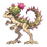
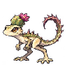
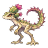

No.178
ソニグレイヴ
芽 希少
巨大な蔓の迷路を巡回する。曲がった棘は仲間を傷つけないよう内側へ閉じる。
基本データ
| 図鑑番号 | No.178 |
|---|---|
| タイプ | 芽タイプ |
| 進化 | ソニヴェルからLv.42で進化 |
| 入手方法 | 若萌の村（Lv.59〜62）、樹上の集落（Lv.71〜74）、月下の雪原（Lv.89〜92）の草むらに出現。 |
Lv.50の能力値
| 体力 | 297 | |
|---|---|---|
| 物理攻撃 | 175 | |
| 物理防御 | 122 | |
| 特殊攻撃 | 179 | |
| 特殊防御 | 130 | |
| 素早さ | 123 | |
| 命中 | 104 | |
| 回避 | 102 |
冒険中の能力値はレベルに応じて上がります。オンライン対戦の通常レンタルはLv.50で統一されます。
覚える技
| 技 | タイプ | 分類 | 威力 | 命中 | PP | 効果 |
|---|---|---|---|---|---|---|
| 森羅の行進 | 芽 | 特殊 | 44 | 90 | 10 | 芽の力を解き放つ強力な特殊攻撃。10%で花毒にすることがある。 |
| 翡翠の根 | 芽 | 物理 | 33 | 96 | 15 | 芽の力を込めた物理攻撃。威力と命中のバランスがよい。10%で花毒にすることがある。 |
| 潮のカーテン | 潮 | 特殊 | 34 | 96 | 15 | 潮の力を込めた特殊攻撃。威力と命中のバランスがよい。6%で水封にすることがある。 |
| 芽吹きの祝祭 | 芽 | 回復 | — | — | 10 | 芽の力で最大体力の45%を回復する。 PPを1消費する。 |
進化の系譜

ソニカLv.24 ▶
ソニヴェルLv.42 ▶- ソニグレイヴ
タイプ相性
芽タイプの技は潮タイプに強く（1.5倍）、灯タイプの技を受けると効果が大きくなります。同じタイプの技を使うと威力が1.15倍になります。